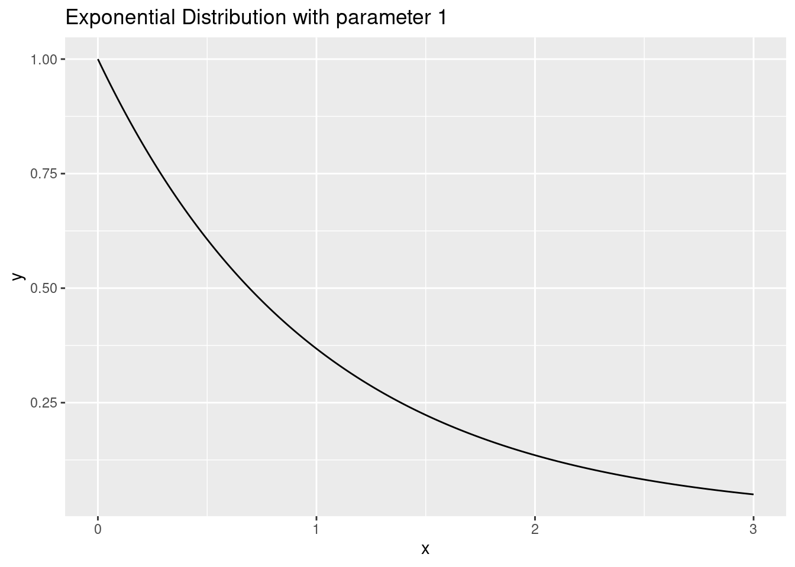

The exponential distribution is a continuous probability distribution given by an exponential function with a fixed rate \(\lambda\).
x <-seq(0, 3, .01)y <-dexp(x, 1)ggplot() +geom_line(aes(x = x, y = y)) +ggtitle("Exponential Distribution with parameter 1")

Poisson Process
In a “Poisson Process”, events occur randomly in time. The interval between two consecutive events is chosen (independently) from an exponential distribution.
t <-rexp(100, 1)arrivals <-cumsum(t)ggplot() +geom_col(aes(x = arrivals, y =1), width = .015, color ="black") +ggtitle("Arrival Times in a Poisson Process")
Warning: `position_stack()` requires non-overlapping x intervals